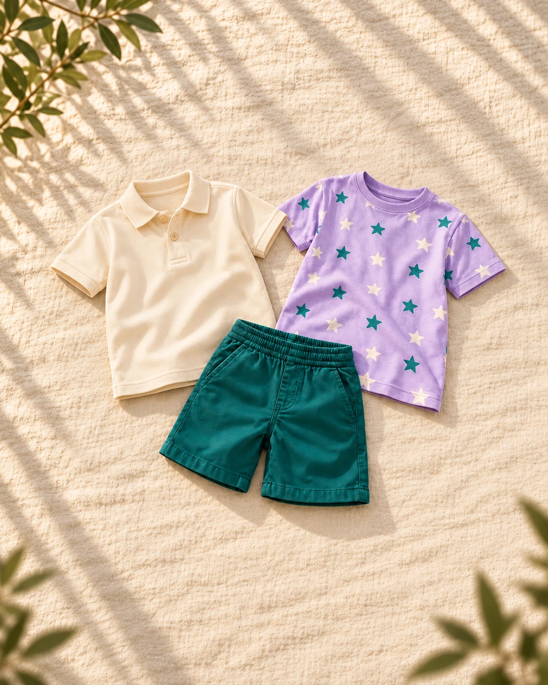

hero-right-clothes-v2
Polo creme, camiseta lilás de estrelas e short verde-petróleo sobre tecido claro, sem modelo.Original: 1536 × 1024 · 55a48f205c033b0ce331d01cd1c3809796c9aab2d3ca154d6a0091caed165d54desktop: 1536 × 1024, 3:2 · d1a931dc40c041436bd50fd4d5aceff211ec1a00685081d1860ea24b2f2f0c89narrow: 1120 × 1400, 4:5 · b9a21d3ea5cca45235b095c79a4600687ce43ae848bafb697587b3d3bdcd2723Narrow hero — 4:5
